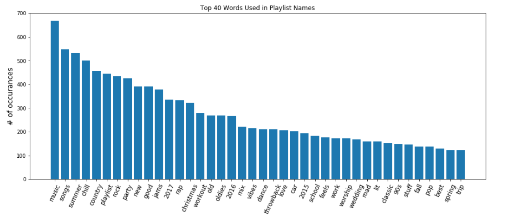
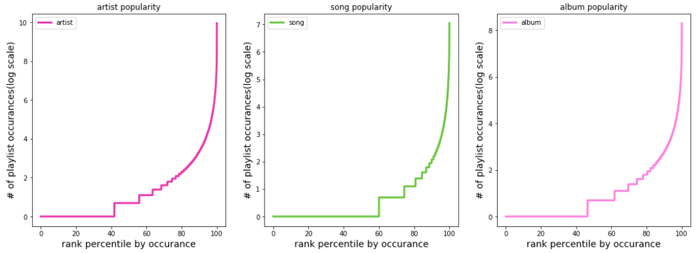
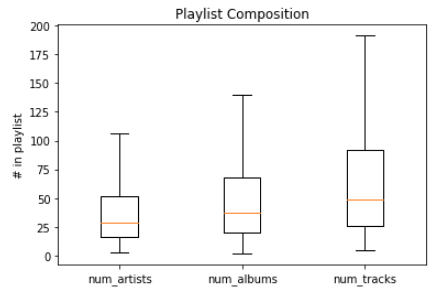
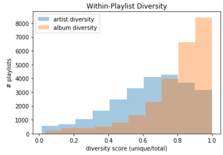
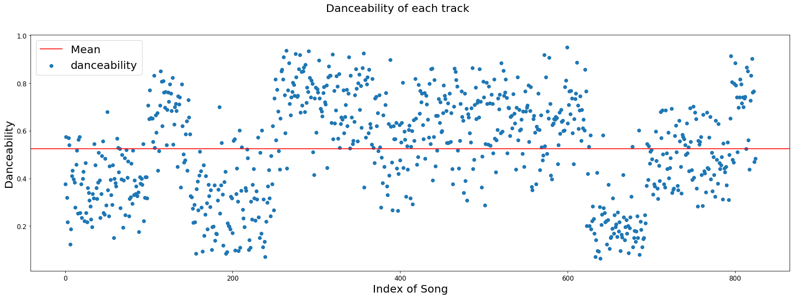
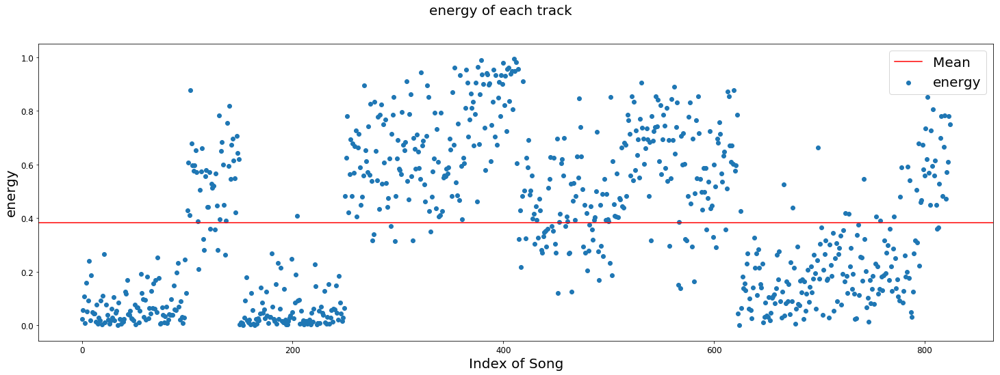
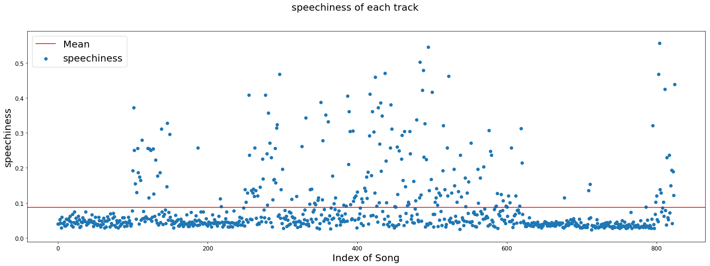
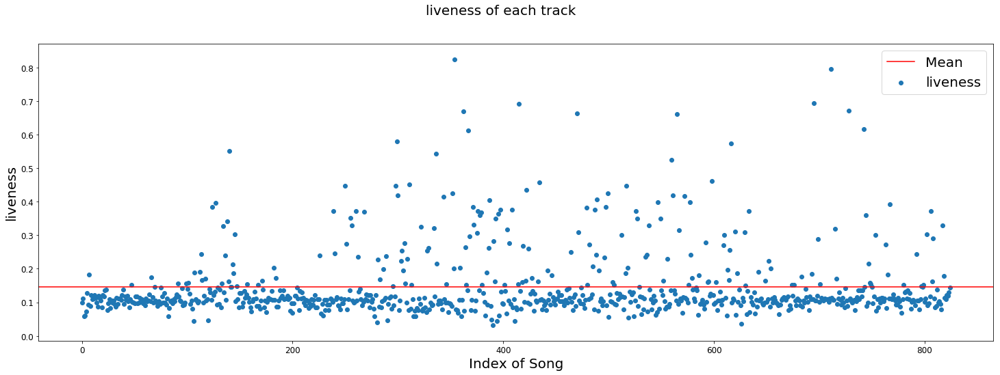
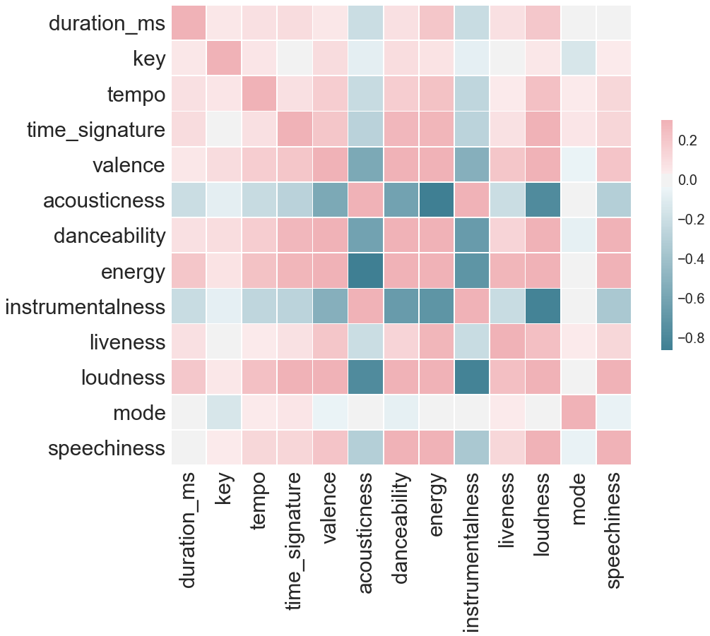
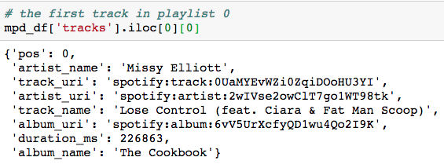

Exploratory Data Analysis
Million Playlist Dataset EDA (MPD_EDA.ipynb)
For our base model we are primarily focused on the Million Playlist Dataset (MPD). Each observation corresponds to a single Spotify playlist, with various fields representing its different properties. Our first task was to determine which of these features would actually be useful for our playlist generator. For example, a playlist’s name and description may provide important information about its intended theme and what the creator sees as being shared across the tracks in it.
The name data certainly looks promising but the same can’t be said for the descriptions.
While it may initially look similar to our names plot we see that the actual number of occurrences of each word in our sample is very far lower. This is because less than 2% of playlists actually have a description. With this much data missing from a predictor, it is impractical to do an imputation and benefits more from dropping the description field entirely.
A large number of followers may show that the user community deems a playlist to be exemplary. However, initial EDA shows that after removing some extreme outliers (potentially playlists ‘featured’ by Spotify) the mean number of followers is only about 1.5 with a standard deviation also of 1.5. If there isn’t much variation in this value among playlists it might not be useful after all.
Other features don’t seem to require much investigation. It’s hard to see how we benefit from knowing the number of edits a playlist has had, or if the time a playlist was last modified is really relevant.
We also looked at popularity and diversity in playlist ecosystem in terms of songs, artists, and albums.
Here we can see that a relatively small percentage of artists, songs, and albums make up a significant percentage of total playlist content, the the effect being most pronounced for songs. This information will be valuable going forward as we build our model. Knowing that songs dominate in the playlist space we may wish to take steps to prevent us from concluding that they are highly similar to many tracks when it is really their overall popularity that accounts for their ubiquity. (See final section for discussion of the Jaccard Similarity Index)
We also gathered some information regarding playlist composition (i.e., number of artists, tracks, and albums) and diversity (e.g., the ratio of unique artists to total artists).
 This could prove to be important for determining how long a playlist should be if not specified by the user. Perhaps there is also a ‘sweet spot’ we should aim for as far as within-playlist diversity. It appears, for example, that most playlists do have repeated artists.
Spotify API EDA
In order to get a better idea of the composition of the playlists featured on Spotify, we pulled the tracks of top 50 playlists featured by Spotify to see if we can detect a trend of what Spotify thinks its listeners want. We then extract the audio features of each track to be able to better categorize the songs.
| KEY | VALUE TYPE | VALUE DESCRIPTION |
|---|---|---|
| acousticness | float | A confidence measure from 0.0 to 1.0 of whether the track is acoustic. 1.0 represents high confidence the track is acoustic. |
| danceability | float | How suitable a track is for dancing based on a combination of musical elements including tempo, rhythm stability, beat strength, and overall regularity. A value of 0.0 is least danceable and 1.0 is most danceable. |
| duration_ms | int | The duration of the track in milliseconds. |
| energy | float | Energy is a measure from 0.0 to 1.0 and represents a perceptual measure of intensity and activity. Perceptual features contributing to this attribute include dynamic range, perceived loudness, timbre, onset rate, and general entropy. |
| instrumentalness | float | Predicts whether a track contains no vocals. “Ooh” and “aah” sounds are treated as instrumental in this context. Rap or spoken word tracks are clearly “vocal”. The closer the instrumentalness value is to 1.0, the greater likelihood the track contains no vocal content. Values above 0.5 are intended to represent instrumental tracks, but confidence is higher as the value approaches 1.0. |
| key | int | The key the track is in. Integers map to pitches using standard Pitch Class notation . E.g. 0 = C, 1 = C♯/D♭, 2 = D, and so on. |
| liveness | float | Detects the presence of an audience in the recording. Higher liveness values represent an increased probability that the track was performed live. A value above 0.8 provides strong likelihood that the track is live. |
| loudness | float | The overall loudness of a track in decibels (dB). Loudness values are averaged across the entire track and are useful for comparing relative loudness of tracks. Loudness is the quality of a sound that is the primary psychological correlate of physical strength (amplitude). Values typical range between -60 and 0 db. |
| mode | int | Mode indicates the modality (major or minor) of a track, the type of scale from which its melodic content is derived. Major is represented by 1 and minor is 0. |
| speechiness | float | Speechiness detects the presence of spoken words in a track. The more exclusively speech-like the recording (e.g. talk show, audio book, poetry), the closer to 1.0 the attribute value. Values above 0.66 describe tracks that are probably made entirely of spoken words. Values between 0.33 and 0.66 describe tracks that may contain both music and speech, either in sections or layered, including such cases as rap music. Values below 0.33 most likely represent music and other non-speech-like tracks. |
| tempo | float | The overall estimated tempo of a track in beats per minute (BPM). In musical terminology, tempo is the speed or pace of a given piece and derives directly from the average beat duration. |
| time_signature | int | An estimated overall time signature of a track. The time signature (meter) is a notational convention to specify how many beats are in each bar (or measure). |
| valence | float | A measure from 0.0 to 1.0 describing the musical positiveness conveyed by a track. Tracks with high valence sound more positive (e.g. happy, cheerful, euphoric), while tracks with low valence sound more negative (e.g. sad, depressed, angry). |
Source: Spotify API Documentation
The 825 observations were then pulled into scatter plots separated by audio feature.
In this plot of danceability, we observe a trend of groupings of danceability with the average danceability being a little more than 5. It is likely that the groupings are from separate playlists that are either below average in danceability or playlists that are above average in danceability. The smooth transitions from low danceability to high danceability in this suggest that adjacent featured playlists in Spotify may be purposely placed near similar neighbors for a more enjoyable experience for users.
Looking at the graph of the energy of each track vs the danceability of each track, we observed a similar pattern between the two graphs. According to the documentation, danceability and energy are not seemingly directed related but still seem to share an indirect relationship. Both somewhat alternate between low energy/danceability and high energy/danceability.
Here, we observe that the mean of speechiness in the tracks were quite low (around .09). According to the documentation, a speechiness from .33-.66 most likely indicates that it is music accompanied with speech (singing is not considered speech). This indicates that a majority of the music had little to no speech in it with a majority of speechy music located together in an area. This could be reinforcing the idea that Spotify likes to have variety in their featured playlists and tend to group similar playlists today and transition between each one. Further research and more data would be needed to prove or disprove this idea.
Liveness is a measure of how loud the background noise is which is indicative of whether the tracks are recorded in a studio or performed live. The trend of this graph is extremely to the trend of the speechiness of each track. Through this, we can make better assumptions about each track. Previously, we thought that the cluster of tracks in the middle were measured high in speechiness due to being rap or another genre of talkative music. Here, we can see that some of those tracks could possibly be recorded live where there is an audience. This cross-section seem to be similar to the areas on the danceability graph where the danceability of the songs are higher.
Here, we have a visualization of the correlation matrix between each predictor that may assist in determining co-linear predictors. According to the matrix, there are a few highly negatively correlated predictors such as acousticness and energy, instrumentalness and loudness, acousticness and loudness. Predictors that are co-linear include valence and danceability, energy and danceability, energy, and valence, and acousticness and instrumentalness, as well as danceability and speechiness.
Data Cleaning
By far the most important data for our base model are the tracks that actually constitute a given playlist. And as we’ll see, a great deal of the information the MPD provides for a playlist (e.g., num_albums, num_artists) can be pulled from the Spotify API with only the track IDs, other data (i.e., num_tracks) can simply derived from our list of tracks itself. So, for the moment, we discard everything but the ‘tracks’ field from each playlist. The tracks field is a list of dictionaries:
We will make the simplifying assumption that track order is not important, treating each playlist as an unordered list of tracks. We can then discard the ‘pos’ data. All other data in the dictionary could be retrieved, should we desire it, through the Spotify API with just the track_uri (i.e., track ID). A playlist for our purposes can be simplified to a list of track_ids. And so we can boil down the entire MPD to a list of lists of track ids.
For our first model we will actually use a string concatenation of artist name and track name as a stand-in for track ID. This will make working with the model much easier. We can simply give it input in the form of such strings (generated by the user on a whim) and get back playlists in the form of these easily interpretable strings. If we were dealing with IDs we’d have to be converting back and forth in so that we mere humans could make any sense of them.